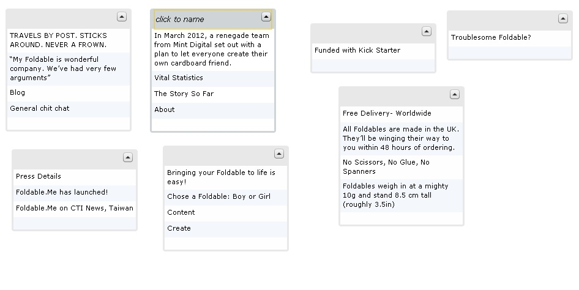
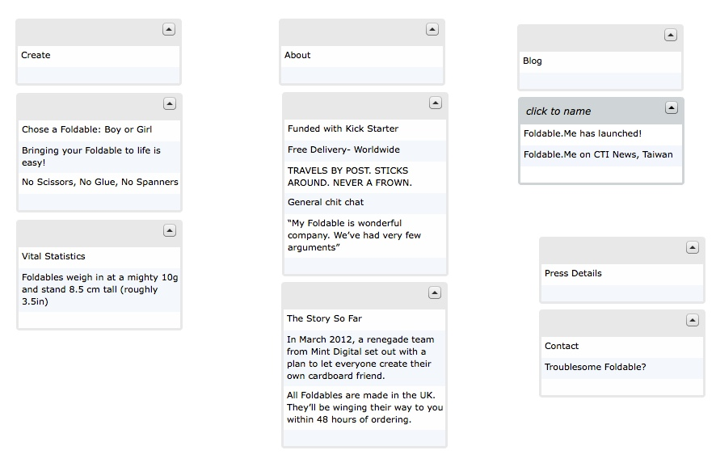
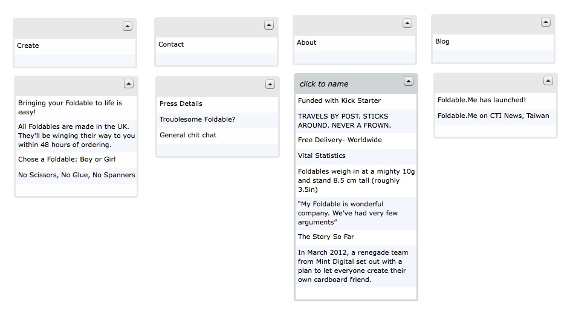
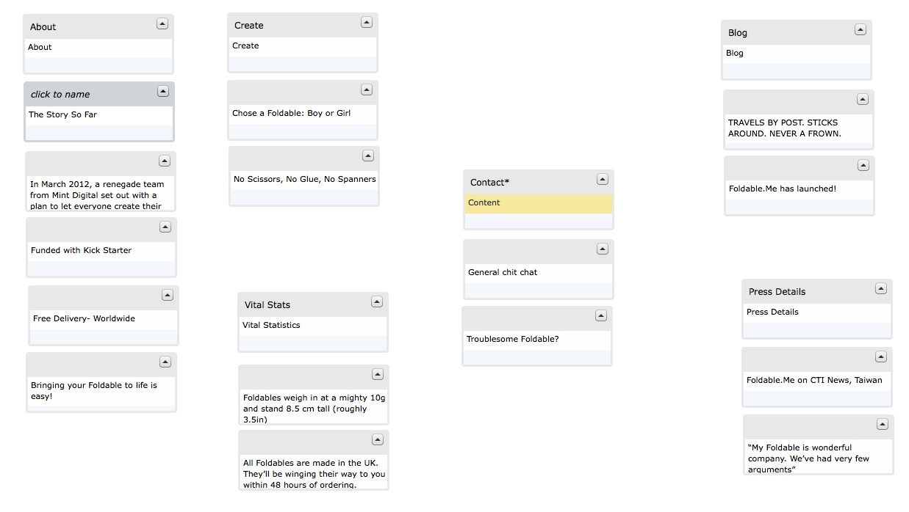

Introduction
For the Foldable.me card sorting exercise, I used an online generator called WebSort.net. I wanted to get a variety of participants, and this proved to be the easiest way for me to get them the study and have them successfully complete it. My participants included a 50-year-old man, a 22-year-old woman, a 33-year-old woman, and myself. I simply took the major page topics (Create, About, Blog, Contact), a main title, and a sentence of content from each of the pages on the website and put it into Web Sort. This site does not have a lot of content, which I think made the sorting process more difficult because you really had to think about the different items relationship with another.
Results
For the 22-year-old woman, I simple sent her the link and did not give her any further instructions besides what Web Sort provides before they start, which is pretty vague. As you can tell from her results, it was difficult for her to place the items correctly together, although she a better job than expected with the little instruction she was provided!
For the 33-year-old woman, I gave her more instruction, informing her that there are major page subjects mixed in with the other items. I did not tell her anything more than that, but by planting that idea, you can see that she was more successful with grouping the items correctly.
For the 55-year-old-man, I did a closed-test, and told him that the main subjects that he should organize the content under were Create, About, Blog, and Contact. He was successful with the sorting, and only had a few out of place.
For myself, my sort was almost exactly as the site is, but that definitely has a lot to do with the face that I created the study. The only one I had that was different, was placing the "Vital Stats" under the subject of "Create", because I think it is important information to know before you start creating your own foldable.me.
Conclusion
I think the card sorting test is really interesting, especially for a site like this that does not have a lot of content to begin with. My results showed how providing the participants with a little more information helped boatloads and increased their success rate. I think this result has to be factored in with knowing that they were not given much to work with because the items were short snippets of content and could be hard to comprehend.